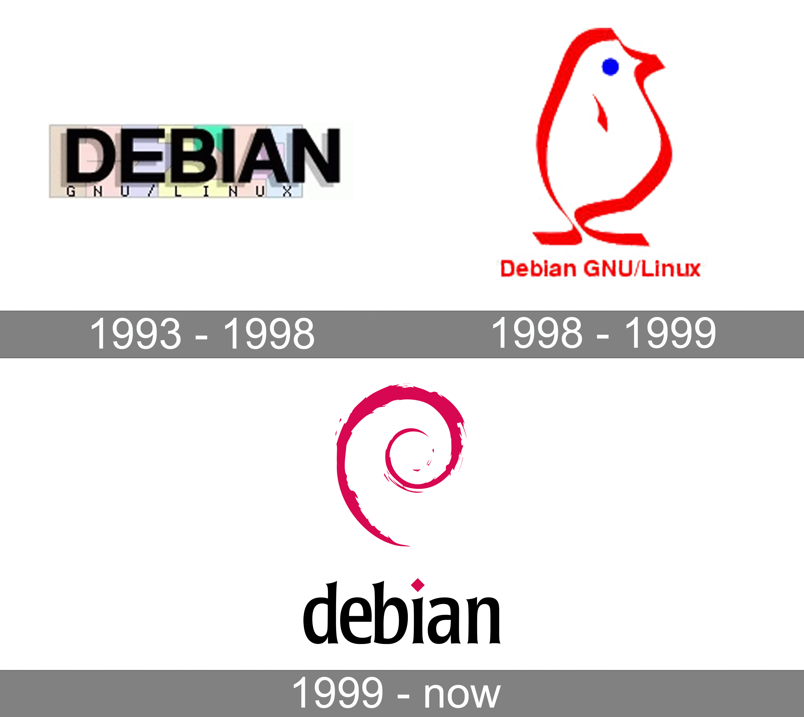
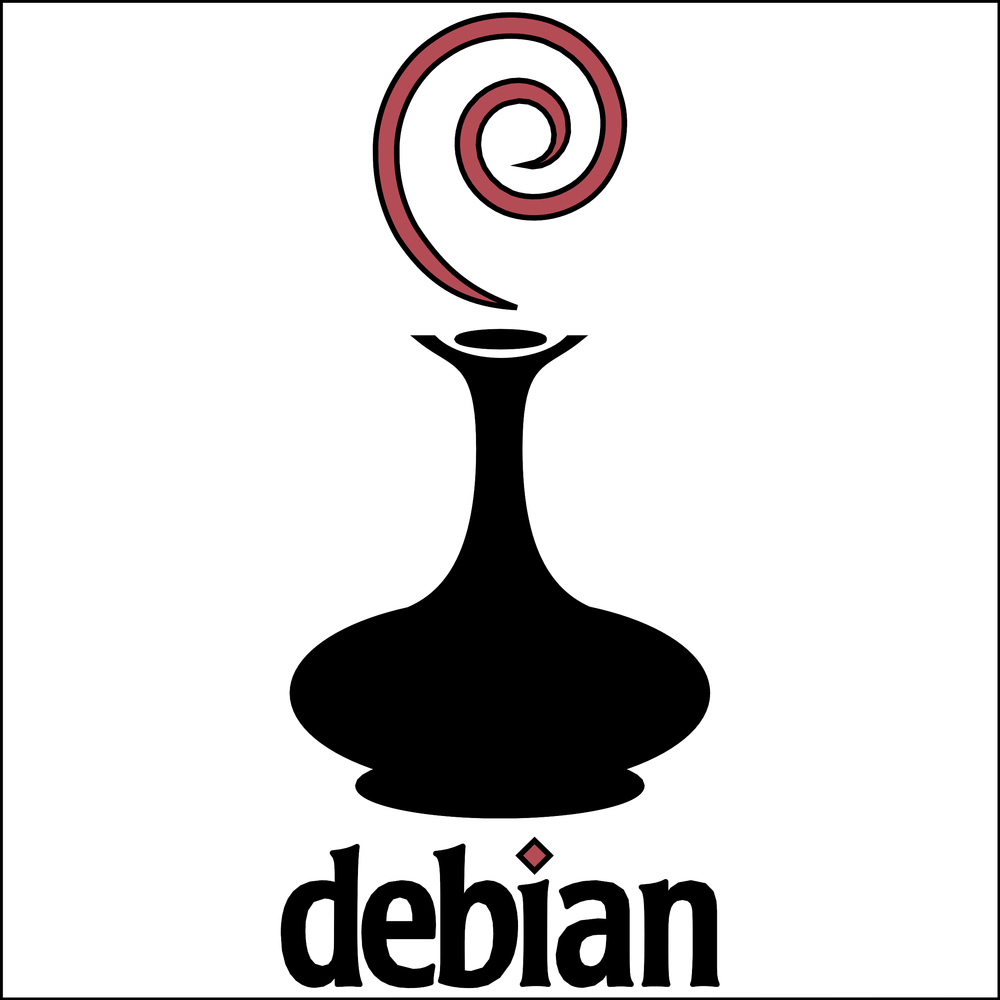
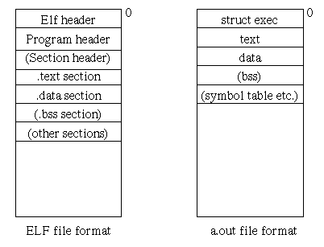
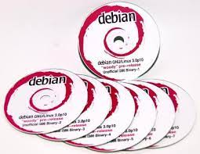

Fun Debian Facts

- Jadi
- twitter: jadi
- Youtue.com/jadimirmirani
- Instagram: jadijadinet
- Podcast: رادیوگیک
 Debra Lyn, 1993, Debian, Solaris, Saleforce, Docker
Debra Lyn, 1993, Debian, Solaris, Saleforce, Docker
Debian Logos


Why the swirl?
a.out

BusyBox
Jigdo

- Stable
- Testing
- Unstable / Sid
- No strict release schedule
- Named after toy story (Bruce Perens from Pixar took over from Ian in 1996)
- No Debian 1.0! The CD vendor, InfoMagic sent development CDs in 1996 so they went for Debian 1.1
Users
Google, International Space Station, Ubuntu, Raspberry pi, Parrot, Kali, Elementary OS, ...
& ...
YOU
- In your everyday life
- On your machines!